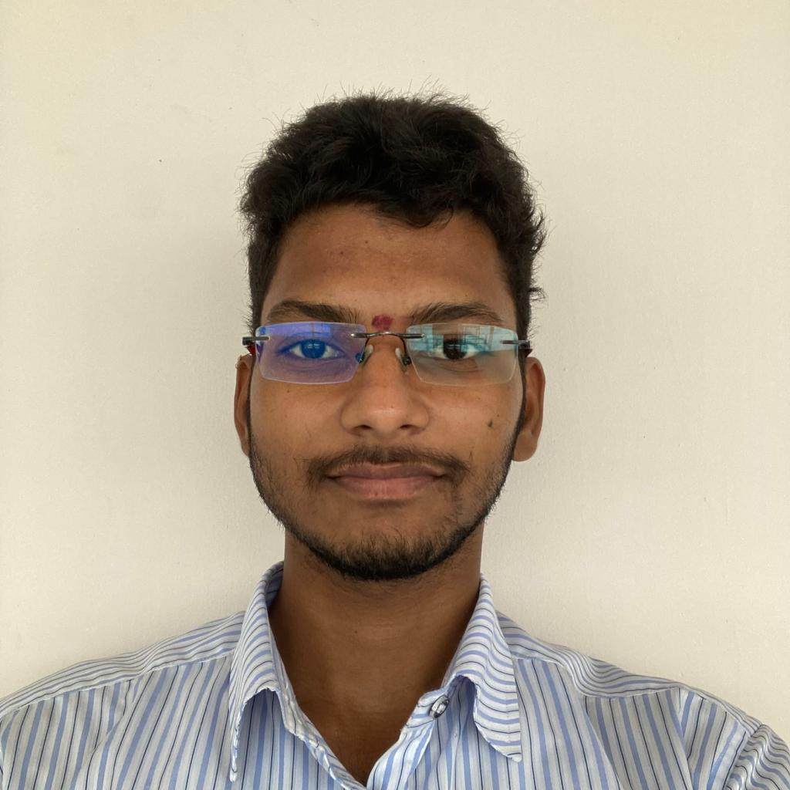

YESU RAMBABU RESUME

House No: 1-89,
Church Street,
Gundavaram - 522212,
Email: mattupalliyesurambabu@gmail.com,
Mobile: +91 7569969629.
CAREER OBJECTIVE:
As a beginner in the field of software company, I strive to associate myself with an organization where I can utilize my skills in the best possible manner, which further gives me an opportunity to grow in my career journey while contributing to the development of the organization.
EDUCATION QUALIFICATION:
| Course | Name of the Institution | Duration of Study | Percentage/CGPA |
|---|---|---|---|
| B. Tech | VFSTR University, Vadlamudi | 2019-2024 | 8.09 |
| Intermediate (M.P.C) | Sri Chaitanya Jr College, Guntur | 2017-2019 | 8.90 |
| SSC | Chanakya High School, Vadlamudi | 2017 | 9.5 |
TECHNICAL SKILLS:
Programming Languages: C, Java, Python.
Frond End Technologies: HTML, CSS, JS.
Back End Technologies: MySQL, PHP.
PROJECTS:
-
- Title: Hospital Management System.
- Duration: 18-3-22 to 20-8-22.
- Description: The purpose of this project is to build a website which serves the basic operations in hospitals. I used PHP language in the project.
-
- Title: Scrolling LED Display.
- Duration: 30-8-22 to 1-1-23.
- Description: The purpose of this project is to display a message through a PC on notice board.
-
- Title: News APK for android.
- Duration: 10-1-23 to 10-4-23
- Description: The purpose of this project is to build an APK to view latest news as category wise.
WORK EXPERIENCE:
- Worked as a Sales Assosicate in DMart during 5-7-2021 to 5-11-2021.
- Did Internship as a Teaching Assistant from July 12 2023 to November 2023.
- Working as a Full Time Teaching Assistant from July 4th to Present.
CERTIFICATIONS:
- Got certificates from NPTEL in the courses Discrete Mathematics, The Joy of Computiong using Python, Software Project Management, Problem Solving Through Programming In C.
- Awarded as Topper in the course Privacy and Security in Online Social Media from NPTEL.
- Awarded as NPTEL DISCIPLINE STAR from NPTEL.
LANGUAGES KNOWN:
Telugu, English.
HOBBIES:
Listening to Music, knowing about Tech, watching movies, knowing the unknown.
DECLARATION:
I declare that all the details given above are genuine to the best of my knowledge and belief.
Signature
M. Yesu Rambabu.